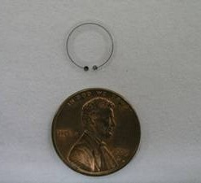
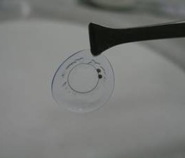
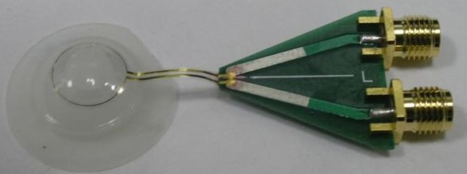
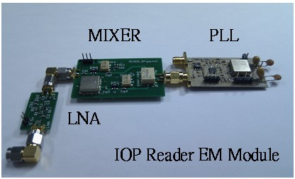

| Topic 1. 高靈敏度二氧化錫氣體感測器 / Topic 2. 非侵入微晶片式眼壓感測器 / Topic 3. 微探針電極與電路系統 |
Topic 2. 非侵入微晶片式眼壓感測器 |
本研究為利用微機電製程技術在軟式隱形眼鏡基材上製作一個新式的非侵入微晶片式眼壓感測器。主要的感測原理是由眼壓自然變化造成眼角膜形變，並利用貼服於角膜之感測單元做為感測角膜輪廓的方式而間接得到眼壓的變化，當眼壓導致角膜曲率改變時使得電感值變化，此電感值經由LC振盪電路轉換為頻率訊號後，便可由無線射頻系統發送出感測到眼壓的振盪訊號，再由外部讀取單元接收並分析訊號以達成眼壓值測量的目的。  圖一 微晶片式隱形眼鏡眼壓感測器雛形體

 圖三 眼壓感測外部讀取單元工程體
|